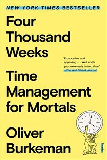
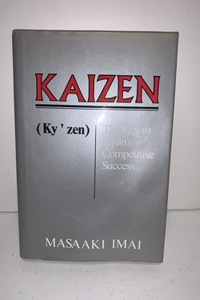
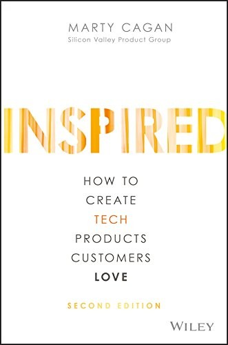
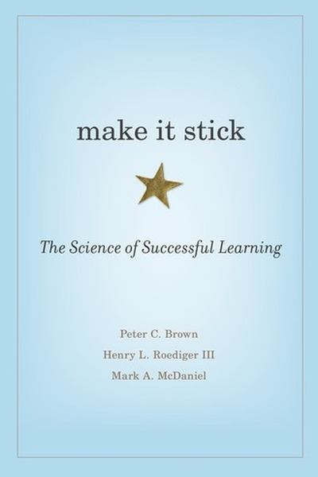
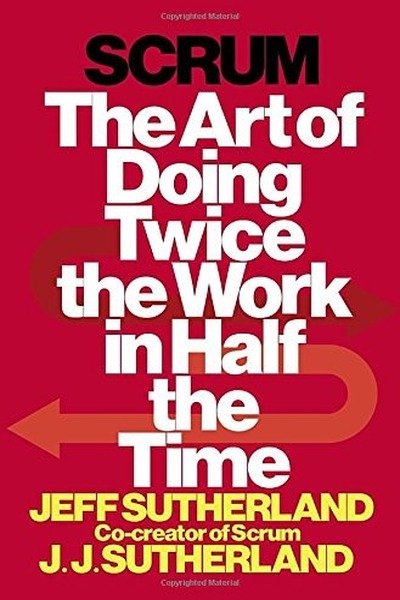
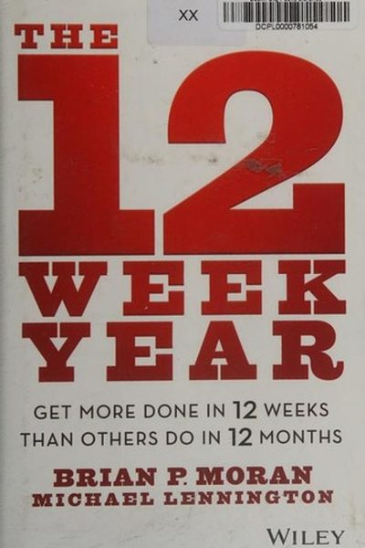
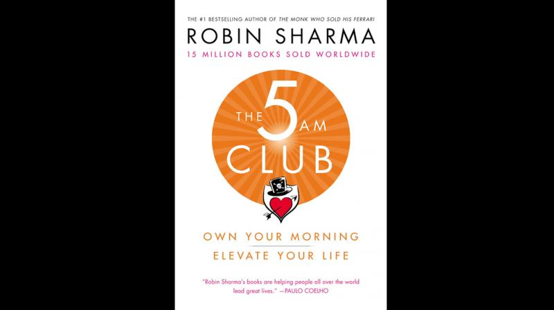
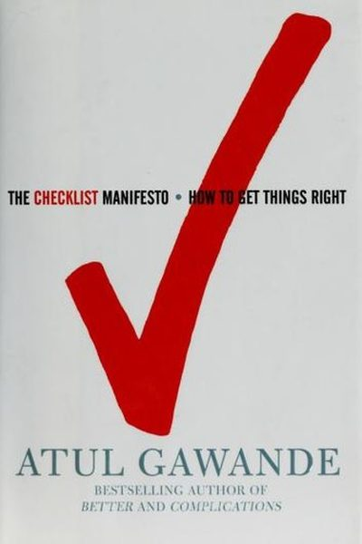

Library › Books like Who Not How
10 Books Like Who Not How That Hit the Same Nerve
You finished Who Not How by Dan Sullivan & Dr. Benjamin Hardy and want the same energy: Every 'How do I do this?' has a better question hiding inside: 'WHO can do this for me?' Freedom lives in that… Here are 10 more that scratch the same itch, each with a free chapter-by-chapter breakdown, key lessons and action steps on this shelf.

Four Thousand Weeks Productivity is a trap: clearing the decks just refills them faster. Freedom begins when you accept you'll never get it all done - and choose deliberately. READ THE FREE BREAKDOWN →
Kaizen KAIZEN = change for the better - not big jumps, but endless small improvements that compound. READ THE FREE BREAKDOWN → Eat That Frog!
Your 'frog' is the biggest, most important task you're most likely to procrastinate on. Eat it first, every morning, and the day is won.
READ THE FREE BREAKDOWN →
Eat That Frog!
Your 'frog' is the biggest, most important task you're most likely to procrastinate on. Eat it first, every morning, and the day is won.
READ THE FREE BREAKDOWN →

Inspired: How to Create Tech Products Customers Love Cagan's manual for empowered product teams: product discovery before delivery, the four risks every feature carries, and why your roadmap is mostly fiction. READ THE FREE BREAKDOWN →
Make It Stick Learning sticks when it feels hard: retrieval, spacing and interleaving beat re-reading, cramming and highlighting every time. READ THE FREE BREAKDOWN → Make Time
You can't add hours, but you can design them: one Highlight a day, and a phone that works for you, not on you.
READ THE FREE BREAKDOWN →
Make Time
You can't add hours, but you can design them: one Highlight a day, and a phone that works for you, not on you.
READ THE FREE BREAKDOWN →

Scrum: The Art of Doing Twice the Work in Half the Time Deliver value in small, inspectable chunks with a self-managing team - and let reality correct the plan every two weeks. READ THE FREE BREAKDOWN →
The 12 Week Year Compress your year to 12 weeks and urgency returns. Vision, weekly plans, and accountability do the rest. READ THE FREE BREAKDOWN →
The 5 AM Club Win the first hour and you win the day: 20 minutes of sweat, 20 of reflection, 20 of growth - before the world wakes up. READ THE FREE BREAKDOWN →
The Checklist Manifesto In a world of overwhelming complexity, the humble checklist is the highest-leverage tool you own. READ THE FREE BREAKDOWN →Every summary is free: lessons, examples, action steps, audio in your language.